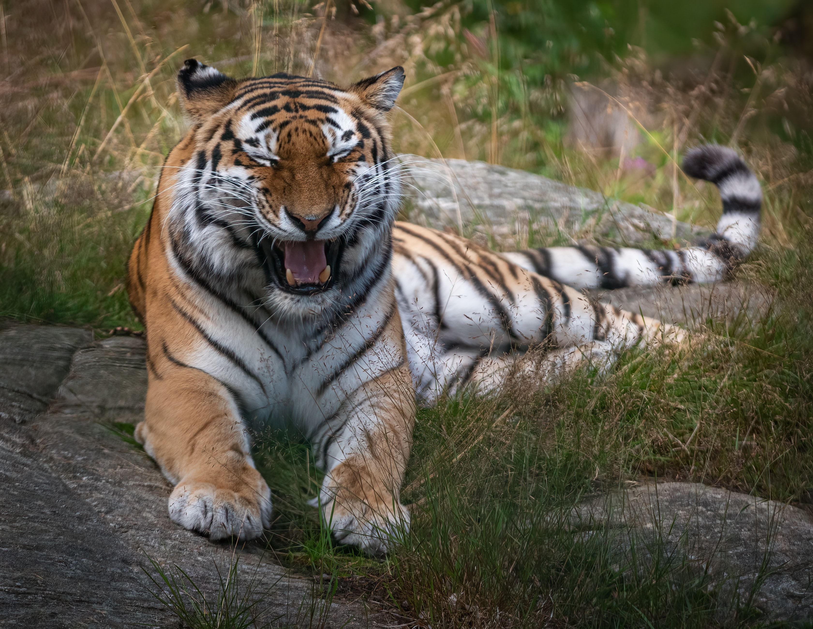
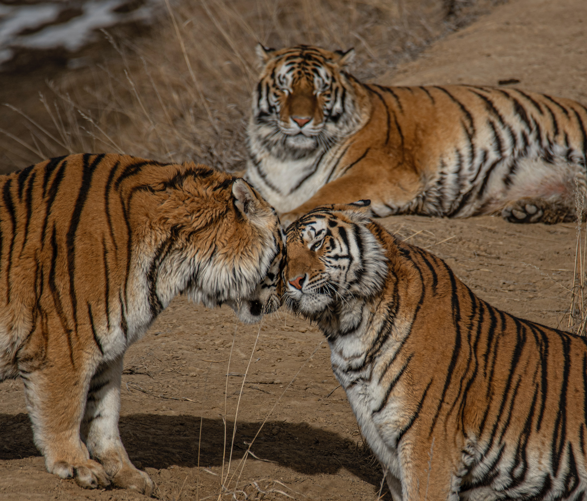
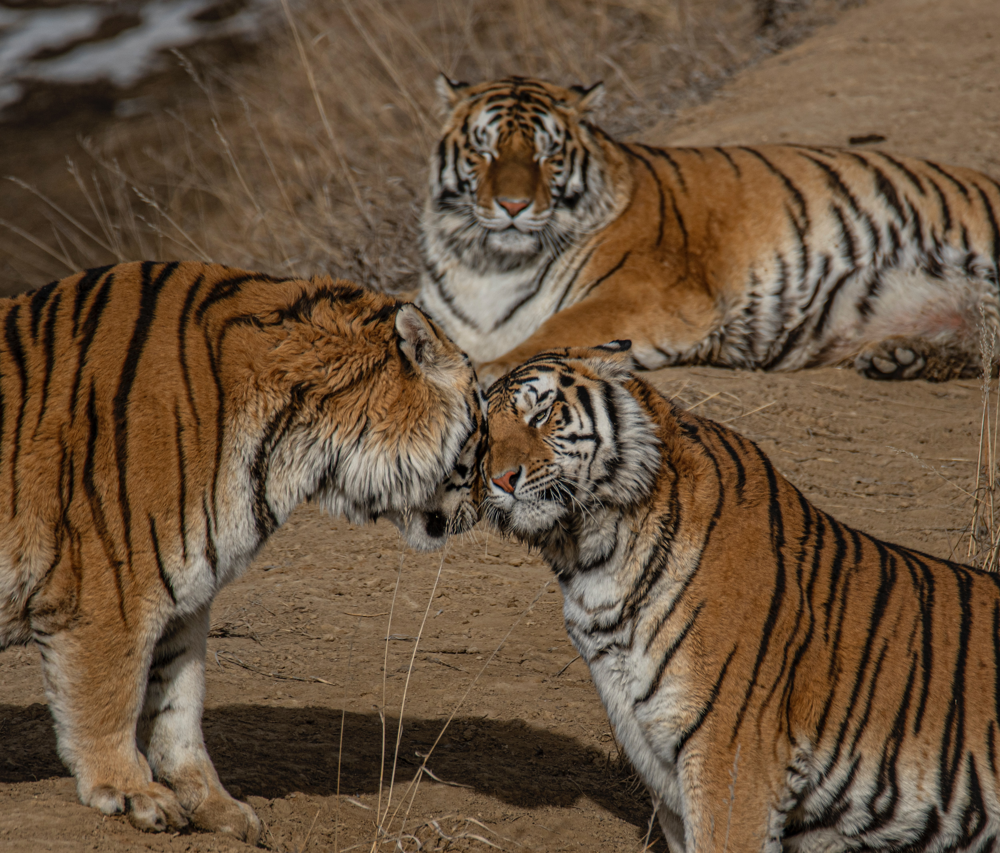

Introduction
The largest of all the Asian big cats, tigers rely primarily on sight and sound rather than smell for hunting. They typically hunt alone and stalk prey. A tiger can consume more than 80 pounds of meat at one time. On average, tigers give birth to two to four cubs every two years.
Physical Characteristics
An adult tiger can grow as long as 13 feet (4m) and weigh up to 650 pounds (296kgs). The females are usually smaller than the males. The size of a tiger depends on the subspecies and the geographical location of its habitat. The northern subspecies tend to be larger than those in the south. The male adult Bengal tiger found in northern India can weigh up to 480 pounds (218kgs) and measure just less than 11 feet (3.4m). On the other hand, the Sumatran tiger who’s native to the Indonesian island of Sumatra can weigh up to 265 pounds (120kgs) and measures 8 feet (2.5m).Tigers have hair all over their body to insulate, protect and camouflage themselves in their habitat. They have two types of hair--guard hair and underfur. The guard hair is long in length and protects the skin. The underfur is shorter and traps air in order to insulate. The color of the hair provides camouflage. There’s also a distinct dark striping pattern on its hair and skin. Each tiger has its own individual pattern. They are usually light orange to reddish in color. Some tigers whose both parents have a mutated gene can be white in color with brown stripes.he tiger uses his powerful jaw to trap and kill prey. Each tiger has approximately 30 razor-sharp teeth in its mouth. Tigers have the largest canines of all big cat species. The canines can grow up to 3 inches (7.6cm) in length and are used to sever the prey’s neck. Back teeth are used to shear meat off the prey’s bone. The small, front incisors pick small pieces of meat and feathers from prey. The older the tiger, the more worn down the teeth get. In the wild if a tiger’s teeth are too worn down and become useless, he could die from starvation.
 
